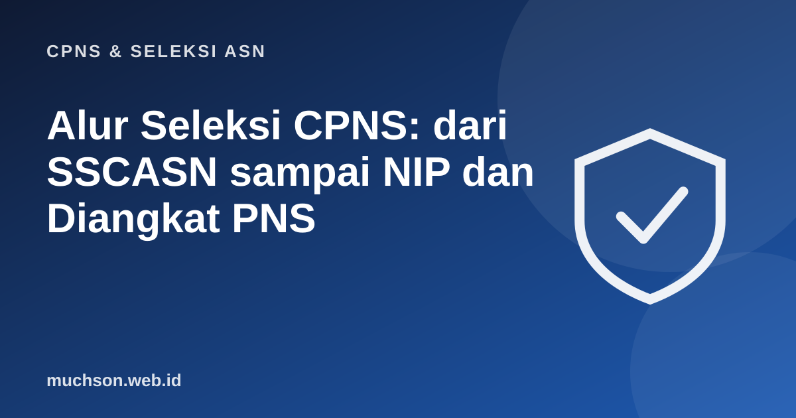

Beranda › Artikel › CPNS & Seleksi ASN
CPNS & Seleksi ASNAlur Seleksi CPNS: dari SSCASN sampai NIP dan Diangkat PNS
Lolos SKB bukan garis finis. Setelah pengumuman, masih ada penetapan nomor induk, pengangkatan sebagai calon PNS, masa percobaan paling lama satu tahun dengan pendidikan dan pelatihan, baru kemudian diangkat menjadi PNS. Berikut alurnya, lengkap dengan batas waktu yang tertulis di aturan.

Gambaran besar: lima fase dari melamar sampai menjadi PNS
Aturan induknya adalah PermenPANRB 6/2024 tentang Pengadaan Pegawai ASN, yang berlaku sejak 23 Juli 2024. Alur di bawah mengikuti pasal-pasalnya, bukan urutan yang beredar dari mulut ke mulut.
Deskripsi teks diagram
- Fase 1: Pelamaran. Daring melalui SSCASN (Pasal 25)
- Fase 2: Seleksi. Administrasi, SKD, lalu SKB (Pasal 26)
- Fase 3: Pengumuman dan sanggah. Hasil akhir diumumkan; sanggah 3 hari kalender (Pasal 51 dan 53)
- Fase 4: Penetapan NIP dan pengangkatan calon PNS. NIP paling lama 25 hari kerja (Pasal 56 dan 58)
- Fase 5: Masa percobaan lalu PNS. Paling lama 1 tahun, lulus diklat dan sehat (Pasal 62 dan 64)
Status 17 November 2026: akun SSCASN CPNS 2026 sudah dibuka sejak 14 November, namun jadwal resmi pendaftaran formasi dan tahapan seleksi belum diumumkan. Ikuti sscasn.bkn.go.id dan kanal resmi BKN, bukan kabar dari pesan berantai.
Fase 1: melamar lewat SSCASN
Pelamaran dilakukan secara daring melalui SSCASN (Pasal 25 ayat 1). Ada tiga aturan pelamaran yang menentukan nasib sebelum tes dimulai: dalam satu tahun anggaran Anda hanya boleh melamar satu jenis pengadaan (PNS atau PPPK), satu instansi, dan satu jenis jabatan. Melamar lebih dari itu, atau memakai dua nomor identitas kependudukan berbeda, membuat pelamar dianggap gugur dan dapat dikenai sanksi (Pasal 25 ayat 3 sampai 5).
Detail syarat dan kesalahan yang paling sering terjadi saya bahas di artikel tersendiri tentang penyebab gugur administrasi.
Fase 2: tiga tahap seleksi
- Seleksi administrasi. Panitia instansi mencocokkan persyaratan administrasi dan kualifikasi dengan dokumen pelamaran, lalu mengumumkan hasilnya secara terbuka (Pasal 28). Dokumen yang tidak memenuhi syarat berarti tidak lulus.
- SKD. Tes kompetensi dasar di CAT BKN. Peserta yang diumumkan lulus paling banyak 3 kali kebutuhan jabatan (Pasal 30 dan 31).
- SKB. Tes kompetensi bidang bagi yang lulus SKD (Pasal 32). Nilai akhir adalah integrasi SKD 40% dan SKB 60% (Pasal 45).
Selisih antar tahap dijelaskan lebih rinci pada artikel perbedaan SKD dan SKB.
Fase 3: pengumuman hasil dan masa sanggah
Hasil akhir seleksi diumumkan, lalu pelamar yang keberatan dapat mengajukan sanggahan paling lama 3 hari kalender sejak hasil akhir diumumkan, melalui SSCASN (Pasal 53 ayat 1 dan 2). Panitia dapat menerima alasan sanggahan bila kesalahan bukan berasal dari pelamar, dan dapat menolaknya bila kesalahan berasal dari pelamar. Jika sanggahan diterima, hasil diumumkan ulang paling lama 7 hari kalender sejak waktu pengajuan sanggah berakhir.
Deskripsi teks diagram
- Hasil akhir diumumkan: oleh instansi
- Sanggah via SSCASN: paling lama 3 hari kalender
- Panitia menilai: diterima jika bukan salah pelamar
- Persetujuan Panselnas: bila hasil berubah
- Pengumuman ulang: paling lama 7 hari kalender
Pelamar dilarang membantu atau melakukan kecurangan di semua tahap. Jika terbukti, pelamar dinyatakan gugur dan tidak boleh melamar pada penerimaan ASN berikutnya (Pasal 50 ayat 2).
Fase 4: NIP dan pengangkatan sebagai calon PNS
Pelamar yang lulus diangkat dan ditetapkan sebagai calon PNS oleh Pejabat Pembina Kepegawaian (PPK) setelah mendapat persetujuan teknis dan penetapan nomor induk pegawai dari Kepala BKN (Pasal 56 ayat 1). Penerbitan nomor induk calon PNS diterima PPK paling lama 25 hari kerja sejak berkas disampaikan (Pasal 58 ayat 1).
| Pelaku | Peran dalam alur | Dasar |
|---|---|---|
| Pelamar | Melamar via SSCASN, mengikuti tes, mengajukan sanggah bila perlu | Pasal 25, 29, 53 |
| Panitia seleksi instansi | Seleksi administrasi, menetapkan dan mengumumkan hasil, menilai sanggahan | Pasal 28, 29, 31, 53 |
| Ketua Panselnas | Mengolah integrasi nilai SKD dan SKB, menyetujui perubahan hasil | Pasal 45, 53 |
| Kepala BKN | Persetujuan teknis dan penetapan nomor induk pegawai | Pasal 56, 58 |
| PPK instansi | Menetapkan pengangkatan calon PNS, lalu pengangkatan menjadi PNS | Pasal 56, 64 |
Dua komitmen yang perlu dipahami sebelum melamar
- Mengabdi di instansi yang sama minimal 10 tahun. Pelamar PNS membuat surat pernyataan bersedia mengabdi pada instansi tersebut dan tidak mengajukan pindah ke instansi lain dengan alasan pribadi paling singkat 10 tahun sejak diangkat sebagai PNS (Pasal 59 ayat 2). Jika tetap mengajukan pindah, dianggap mengundurkan diri (ayat 4).
- Mundur setelah lulus ada sanksinya. Pelamar yang sudah lulus tahap akhir atau sudah punya nomor induk lalu mengundurkan diri dikenai sanksi tidak boleh melamar penerimaan ASN untuk 2 tahun anggaran berikutnya (Pasal 58 ayat 2).
Fase 5: masa percobaan, diklat, lalu menjadi PNS
Calon PNS wajib menjalani masa percobaan paling lama 1 tahun (Pasal 62 ayat 1). Selama itu instansi wajib memberikan pendidikan dan pelatihan, yang hanya dapat diikuti satu kali dan biayanya dibebankan pada instansi (ayat 2 sampai 4). Untuk diangkat menjadi PNS, calon PNS harus lulus pendidikan dan pelatihan serta sehat jasmani dan rohani (Pasal 64 ayat 1), lalu diangkat oleh PPK ke dalam jabatan dan pangkat sesuai peraturan (ayat 2).
Deskripsi teks diagram
- Pelamar: mendaftar dan mengikuti seleksi
- Peserta lulus seleksi: menunggu persetujuan teknis dan nomor induk dari BKN
- Calon PNS: sudah bernomor induk, menjalankan tugas, masa percobaan paling lama 1 tahun
- PNS: lulus diklat dan sehat jasmani rohani
Daftar periksa persiapan setelah dinyatakan lulus
Sebelum semua itu, Anda perlu lolos SKD dan SKB. Latihan SKD gratis dengan format CAT dan rapor per subtes tersedia di LolosSeleksi.
Tanya jawab
Berapa lama dari pengumuman kelulusan sampai NIP terbit?
Apakah calon PNS langsung bekerja sebelum jadi PNS?
Boleh pindah instansi setelah jadi PNS?
Apa akibatnya jika mundur setelah dinyatakan lulus?
Di mana sanggah diajukan?
Referensi
- Peraturan Menteri PANRB Nomor 6 Tahun 2024 tentang Pengadaan Pegawai ASN (teks resmi, BKN) (membuka tab baru)
- Peraturan Menteri PANRB 6/2024, status berlaku dan mencabut Permen 27/2021 (peraturan.bpk.go.id) (membuka tab baru)
- Kompas.com, 16 November 2026: registrasi akun SSCASN CPNS 2026 dibuka, jadwal pendaftaran belum diumumkan (membuka tab baru)
- Antara Jawa Barat: pendaftaran CPNS 2026 ditargetkan November di sscasn.bkn.go.id (membuka tab baru)